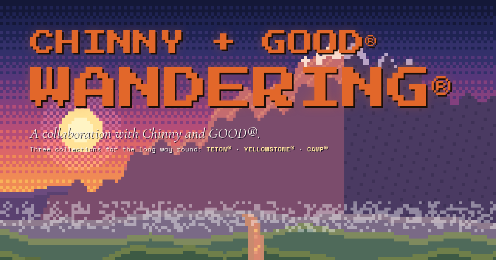
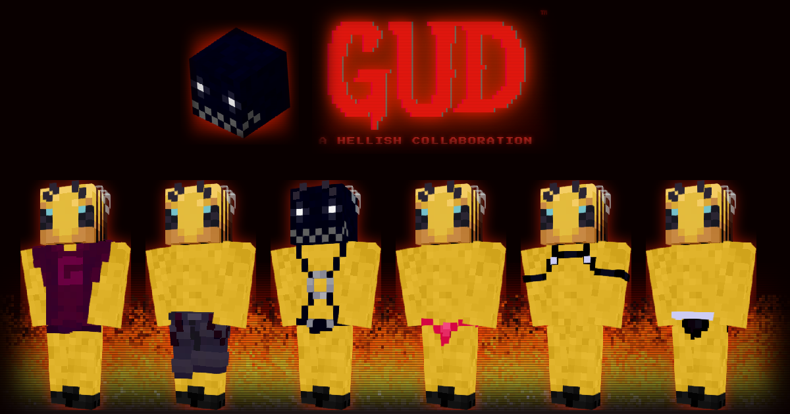
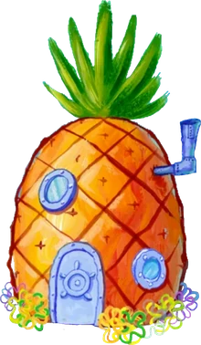
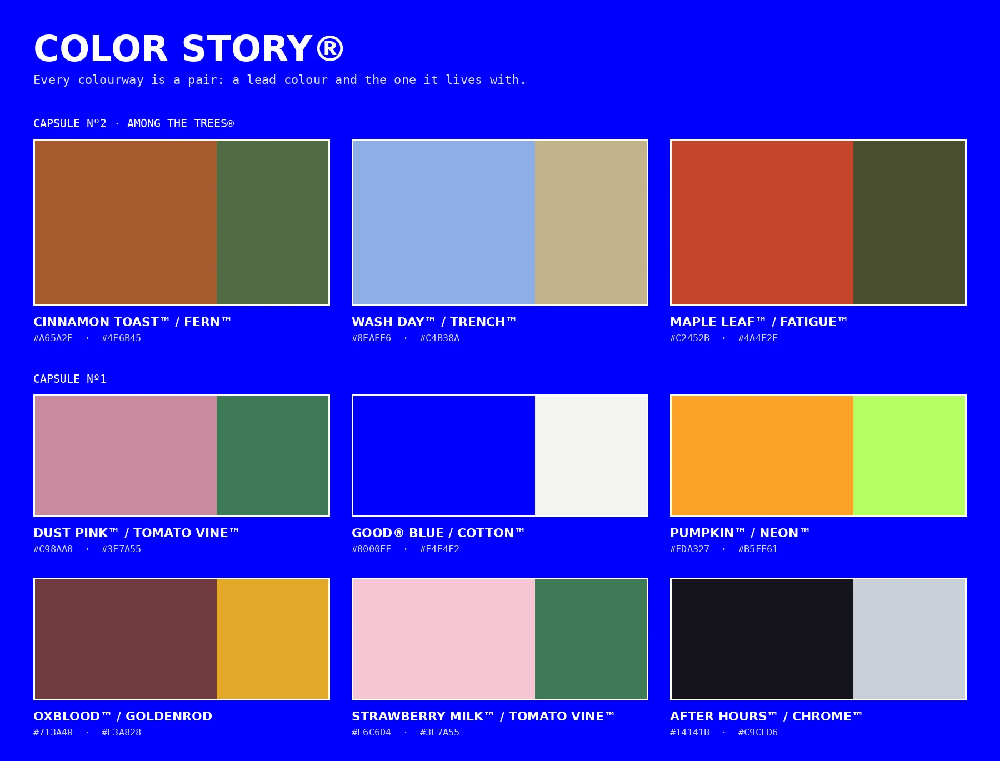
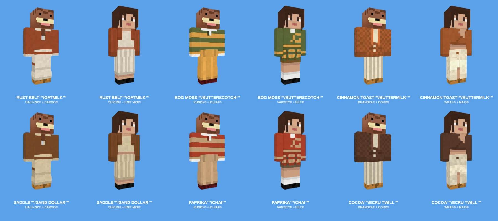

Congratulations: you're a GOOD® collaborator. From here we make something together, from the first idea to the day it drops. This page is your starting point: what we've made before, a few questions to get your idea moving, and an honest look at what a Minecraft skin can and can't do.
Nº01
Collaborations so far

CHINNY + GOOD®
WANDERING®
Three collections for the long way round: TETON® for the wandering cowboy, YELLOWSTONE® for the explorer and CAMP® for the summer uniform. It started as a single sentence about a lone stroll through the wilderness.

GUD™ × GOOD®
GUD™
A hellish collaboration: six pieces, from the CUTOFF TEE to the HARNESS, with its own page, a countdown and a heavy CRT look. Built around one strong mood instead of a long brief.

DEEP END®
DEEP END®
An underwater drop: GOODIE®s in SPONGE™, STARFISH PINK™ and CLAW RED™, and a Krusty uniform. Each piece is a character, told through colour alone.
Nº02
A few questions
There are no wrong answers, and you can skip any of them. Write whatever comes first; we'll shape it together. Your answers stay in this browser until you copy them.
Nº03
Thinking about your skin
Start with a feeling
"A lone stroll through the wilderness" became WANDERING®. A mood gives every later choice something to answer to, and it's easier to judge than a list of features.
One piece leads
Pick the hero: the jacket, the hoodie, the uniform. Everything else supports it. A fit with three loud pieces reads as none.
Borrow from real clothes
A chore coat, a henley, a race suit. Real garments come with shapes people already recognise, and they translate to pixels better than invented ones.
Think in colourways
Imagine the same piece three ways. If the idea only works in one colour, it's a costume; if it works in three, it's a collection.
Find the detail
One small thing makes it yours: a tag, a stripe, a patch, a colour that means something to your people. One is enough.
Name everything
Pieces and colours with names are remembered. DUCK HUNTER™ says more than "orange", and it gives the drop a voice.
Nº04
Colour story, colours and shapes
THE COLOR STORY®
Every colourway is a pair: a lead colour and the one it lives with. A whole collection is a family of those pairs, so it reads as one thing.
Keep it to three to six colours, with one accent used sparingly.
Mix light and dark. Two colours of the same brightness blur together at pixel scale.
Avoid near twins. If two colours need a second look to tell apart, drop one.
Check it on different skin tones; a colour that disappears on one player isn't finished.
Give each colour a name and a reason.

COLOR STORY®, CAPSULES Nº1 AND Nº2
Shapes
A skin is boxes: an 8 × 8 head, an 8 × 12 body, 4 × 12 arms and legs (3 wide on Slim). Shape comes from what sits on the outer layer, and from where colour starts and stops.
Silhouette first: a hood up, a puffer, a cropped hem, a coat that falls over the thighs.
Work in blocks of two or more pixels; single pixels read as noise.
Stripes and seams follow whole pixels, so they run straight across or straight down.
Place marks where people look: the left chest, the centre of the back, a sleeve.

HARMONY BOARD®: TRYING COLOURS ON REAL PIECES
Nº05
What a skin can and can't do
A Minecraft skin is 64 × 64 pixels for the whole body. The front of a jacket is about 8 × 12 of them, and our G is 4 × 4. That's the canvas. Here's how common asks usually translate:
YOU ASK FOR
WHAT YOU GET
Our logo on the chest
A simplified mark of about 4 × 4 to 6 × 6 pixels. A detailed logo turns into a blob, so we redraw it to survive.
Writing on the back
One short word at most, or a symbol. Letters need 3 × 5 pixels each.
A realistic leather jacket
Leather told through colour, a collar and seams, not texture.
A smooth gradient sunset
Three to five bands of colour, stepped.
Fur, feathers, glitter
Suggested with two or three alternating tones.
A long cape or a flowing skirt
A hem on the outer layer of the legs. It won't move, and capes are a separate Minecraft item.
Accessories that stick out
Things that sit close to the body: hoods, collars, scarves, cuffs, hats on the head layer. Nothing can float off the model.
Exactly matching a photo
The feeling of the photo. Lighting in game and in renders changes colours a little; we pick values that hold up in both.
01You send your answers. We talk it through.
02We build a moodboard and a colour story.
03Trials on real pieces, then a first draft on real players.
04Rounds of changes until it's right. Expect two or three.
05It drops: in MAKER®, and on its own page if the project has one.
NEXT
Send us your answers.
DISCORDleeeeeeems
PRIVATE This page is for you only. Please don't share it, screenshot it or pass on anything here.